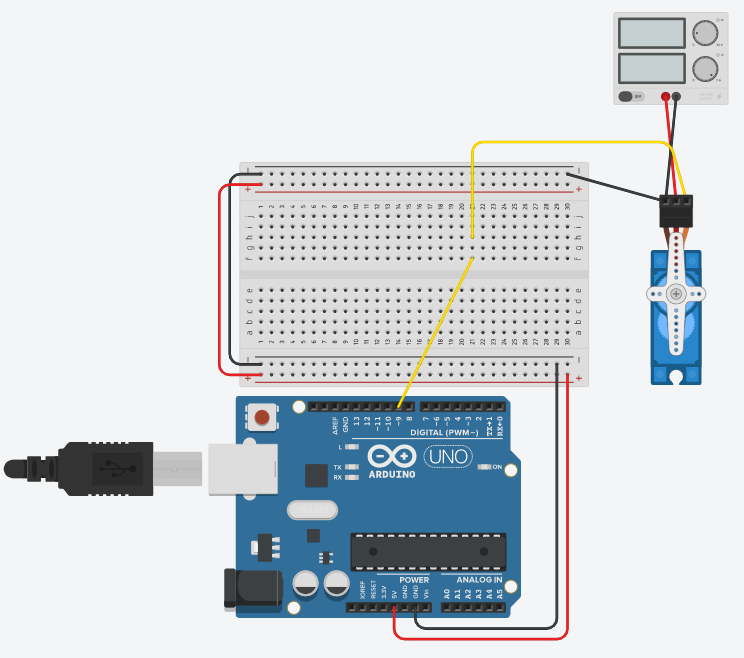

Een standaard servomotor is een positiemotor. Je zegt hem welke hoek je wil, en hij draait daarheen en houdt die stand vast. Het bereik is ongeveer 180 graden.
Dat is meteen het verschil met de andere motoren in dit labo. Bij een DC motor stuur je hoe hard hij draait, bij een stappenmotor stuur je hoeveel stappen hij zet. Bij een servo stuur je een hoek, en de elektronica in de servo zorgt er zelf voor dat de as daar terechtkomt en blijft.
Een servo heeft drie draden: massa (meestal bruin of zwart), voeding (rood) en een stuurdraad (meestal oranje of geel). Over die stuurdraad stuur je pulsen, en de breedte van de puls bepaalt de hoek:
| Pulsbreedte | Hoek |
|---|---|
| 1 ms | 0 graden |
| 1,5 ms | 90 graden |
| 2 ms | 180 graden |
Die puls moet ongeveer 50 keer per seconde herhaald worden. Zolang de pulsen blijven komen, houdt de servo zijn positie vast en verzet hij zich wanneer je tegen de as duwt. Stoppen de pulsen, dan laat hij los en kan je de as met de hand ronddraaien.
Je hebt in analogWrite() ook met pulsen gewerkt, maar dat signaal is hier onbruikbaar. analogWrite() stuurt ongeveer 490 keer per seconde een puls, en je stelt er de verhouding aan/uit mee in, niet de breedte in milliseconden. Een servo wil precies 50 pulsen per seconde van 1 tot 2 ms. Dat zijn twee verschillende signalen die allebei toevallig "PWM" heten.
Die maat komt uit de modelbouw. Een radiobestuurd vliegtuig heeft één zender en één ontvanger, maar meerdere servo's: een voor het richtingsroer, een voor de hoogteroeren, een voor het gas. De zender stuurt daarom om de 20 milliseconden een reeks pulsen door, één per kanaal na elkaar. De ontvanger knipt die reeks uiteen en geeft elke puls aan de servo waar ze bij hoort. De breedte van zo'n puls, tussen 1 en 2 ms, gaf de stand van de stuurknuppel weer.
Wat jij hier op je stuurdraad zet is dus één kanaal uit die radioreeks, en de 50 pulsen per seconde zijn de 20 milliseconden waarin al die kanalen samen pasten. Die afspraak dateert van de jaren 60 en is sindsdien niet meer aangepast, zodat een servo van gelijk welk merk en gelijk welk bouwjaar op hetzelfde signaal draait. Ook de Servo-bibliotheek werkt er nog mee: write(0) en write(180) worden intern 544 en 2400 microseconden, de uiterste pulsbreedtes die ze wil versturen.
Die pulsen zelf timen met digitalWrite() en delayMicroseconds() kan, maar dan is je programma de hele tijd bezig met tellen. Daarom gebruik je de Servo-bibliotheek. Hoe je een bibliotheek toevoegt lees je op Bibliotheken gebruiken.
De bibliotheek zet op de achtergrond een timer aan het werk, die de pulsen genereert terwijl jouw loop() gewoon doorloopt. Je hoeft dus nooit zelf een puls te tellen.
De Servo-bibliotheek maakt de pulsen zelf en werkt op elke digitale pin van de UNO. De ~-pinnen zijn de pinnen waar analogWrite() op werkt, en dat is hier een ander signaal.
Het omgekeerde geldt wel. Zodra je op een UNO één servo aankoppelt, gebruikt de bibliotheek de timer van pin 9 en pin 10. Op die twee pinnen werkt analogWrite() dan niet meer, ook al staat er een ~ bij. Heb je in dezelfde schakeling nog een led te dimmen, kies daar dan pin 3, 5, 6 of 11 voor.
| Functie | Wat ze doet |
|---|---|
attach(pin) |
Koppelt het servo-object aan een pin. Doe dit in de setup(). |
write(hoek) |
Stuurt de servo naar een hoek tussen 0 en 180. |
writeMicroseconds(us) |
Zelfde, maar je geeft de pulsbreedte rechtstreeks op: 1000 is 0 graden, 1500 is 90, 2000 is 180. |
read() |
Geeft de laatste hoek terug die je geschreven hebt. |
attached() |
Geeft terug of het object aan een pin gekoppeld is. |
detach() |
Laat de pin weer los. De pulsen stoppen en de servo laat zijn positie los. |
Bovenaan je programma voeg je de bibliotheek toe en maak je een servo-object. In de setup() koppel je dat object aan de pin waar de stuurdraad op zit.
#include <Servo.h>
Servo mijnServo;
const int servoPin = 9;
void setup()
{
mijnServo.attach(servoPin);
}
void loop()
{
mijnServo.write(0);
delay(1000);
mijnServo.write(90);
delay(1000);
mijnServo.write(180);
delay(1000);
}De servo springt hier van stand naar stand. Tussen de write() en de volgende moet je hem wel de tijd geven om er te geraken, en dat is waar de delay() voor dient. Zonder die wachttijd schrijf je een nieuwe hoek voor de as de vorige bereikt heeft.
Wil je de as vloeiend zien bewegen in plaats van springen, stuur je hem in stappen van 1 graad met een korte pauze ertussen. Dat is wat een for-lus doet.
#include <Servo.h>
Servo mijnServo;
const int servoPin = 9;
void setup()
{
mijnServo.attach(servoPin);
}
void loop()
{
// van 0 naar 180 graden
for (int hoek = 0; hoek <= 180; hoek++)
{
mijnServo.write(hoek);
delay(15); // geef de as tijd om die ene graad af te leggen
}
// en terug
for (int hoek = 180; hoek >= 0; hoek--)
{
mijnServo.write(hoek);
delay(15);
}
}Met 15 ms per graad duurt een volledige sweep van 0 naar 180 ongeveer 180 x 15 ms = 2,7 seconden. Maak je die wachttijd kleiner, dan gaat de as sneller, tot je op een punt komt waar de servo het mechanisch niet meer volgt en de beweging weer schokkerig wordt.
Een kleine hobbyservo kan je bij het uitproberen meestal rechtstreeks op de 5 V van de Arduino hangen. Zodra de servo iets moet trekken, of zodra er meerdere servo's aan hangen, trekt hij meer stroom dan de spanningsregelaar van de Arduino kan leveren. Je merkt dat doordat de Arduino spontaan herstart op het moment dat de servo begint te bewegen. Dan heb je een aparte voeding nodig.

Voed je de servo apart, dan moet de min van die voeding aan de GND van de Arduino. Zonder die gemeenschappelijke massa heeft de servo geen referentie voor je stuursignaal, want de puls die de Arduino stuurt betekent dan niets voor de servo. Het gevolg is een servo die niet reageert of wild begint te schokken, terwijl je code in orde is.